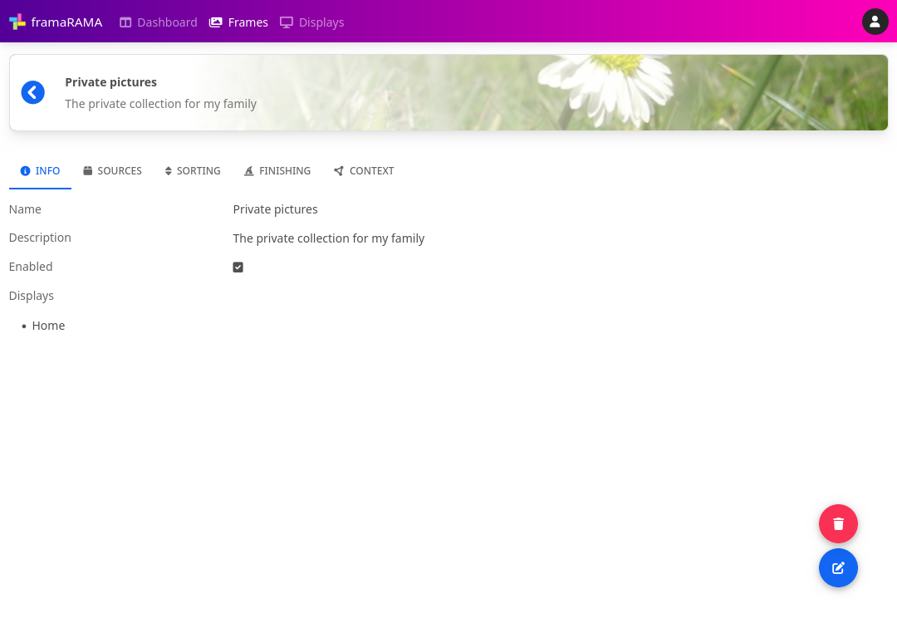

Frames
A frame is a configuration contain used to group and configure photo collections. It defines which photos to show, how to process them, how to priorize them and much more.
The system can manage multiple frames to separate and configure different photo collections.
Overview
When view a given frame all common information of this frame will be shown, e.g. name, description or associated displays.

Info
Common information about a frame can be specified here:
- Name - a short name
- Description - a longer description
- Enabled - a status if processing should take place or not
- Displays - a list of displays using this frame
Sources
To specify which photos should be placed into the collection a source need to be configured. It is possible to setup multiple sources for a frame (e.g. add some photos from collection A and some photos from collection B).
Info
Each source have some basic settings:
- Name - a name
- Update interval - the interval to refresh the collection
- Result mapping - list of fields to map (for ID, for URL, for take date)
- Meta mapping - optionally more additional meta fields
The info page shows the common information about the source. It provides also information about the last update run of the photo collection.
Queue
To specify where to get the photo collection actually, a queue is setup. This consists of multiple items where at the end of the queue will drop out a list of photo URLs.
Some different types of steps can be added to the queue (e.g. load and URL via HTTP, transform or filter the data, etc.). These types are called source plugins.
When using a type of plugin multiple times in the queue, they are run separately. But in some cases you need to use the same type of plugin running in the same context (e.g. when logging into a web site in one step, and loading some data requiring the authentication before).
Depending on the type of the plugin some information need to be provided. Details about the source plugins are described in the plugin section.
Use the "➕" (add) button to add a new step or the "▶" (play) button to start an update.
Items
To review the items in the current photo collection this page can be used to view the resulting collection. It shows some details (id, thumbnail, URL) and provides a basic search functionality.
Sorting
The sorting can be used to reorder or priorize the photos in the collection by some criteria.
Depending on the type of the plugin some information need to be provided. Details about the source plugins are described in the plugin section.
Use the "➕" (add) button to add a new sorting.
Finishing
When displaying a photo on a digital digiframe the source photo requires some preparations (e.g. resize to the geometry of the display, add some blurred borders, etc.). These operations can be defined in this page.
There are different plugins to manipulate the source photo and each operation can generate a new image or an additional image.
Details about the finishing plugins are described in the plugin section.
Use the "➕" (add) button to add a new finishing or the "👁" (eye) button to preview the current set with an random image of the photo collection.
Context
The context is used to provide some (meta) information for the finishing. This could be the general EXIF information of the photo or the resolved geo location (the country, city, etc.).
Details about the context plugins are described in the plugin section.
Use the "➕" (add) button to add a new context.